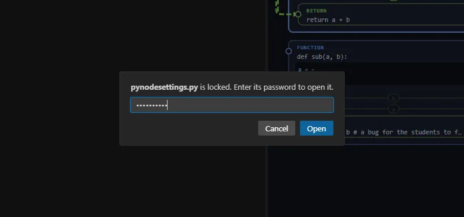
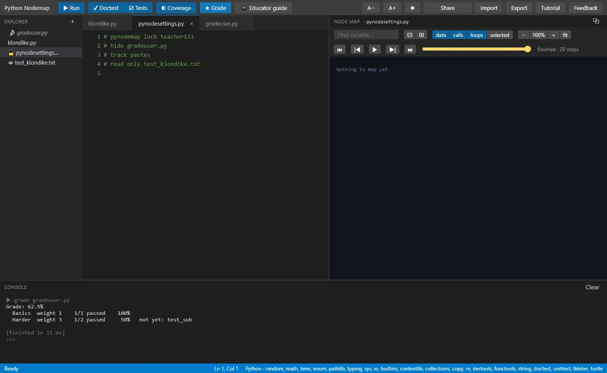
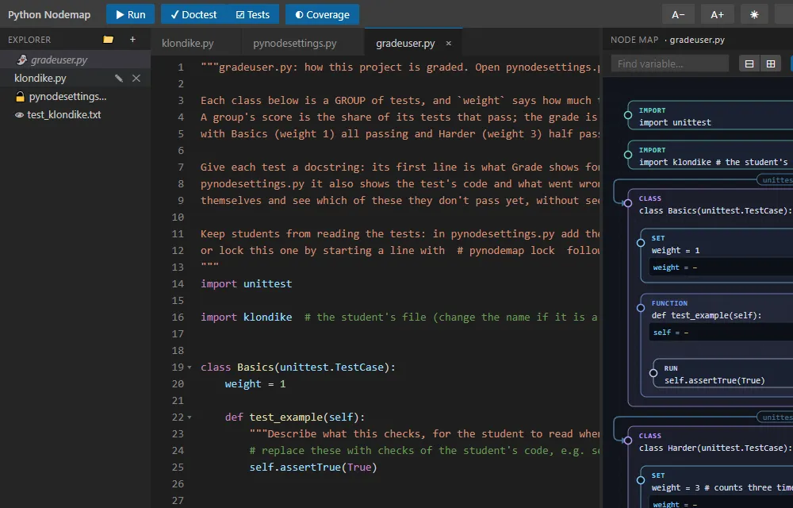

Python Nodemap for educators
Hand out an assignment as a single link, with tests students can run but not read, settings that discourage copying, and a grade at the press of a button. Nothing needs installing and there are no accounts: everything runs in the student's browser. (For the tool itself, see the Tutorial.)
education.py, with this guide in short.
Its password is teach.
1. An assignment in six steps
- Write the starter code the students get (
klondike.py, say), plus any.txtdata or doctest files. - Make
gradeuser.py(the + in the explorer). It starts out as a grading template: groups of tests with weights (see Grading). - Make
pynodesettings.pywith the settings you want, one comment line each, and lock it with a password of your own. - Share: the link holds every file, locked and hidden ones included. Post it for the class.
- Students work in their browser and hand the work back with Share (a link) or Export (a zip).
- Open a student's link or zip (Import → Replace my project), open
pynodesettings.pywith your password, and press ★ Grade.
2. Locked files
A .py file with this line (anywhere in it) can't be opened without the password that follows:
# pynodemap lock my_password

- A locked file still runs: students can
importit, and the ☑ Tests button runs theunittesttests in locked files too, without ever showing their source, not even in a traceback. # pynodemap lockwith no password seals a file: nobody can open it in the tool.- Locked files are left out of a student's Export, but kept in Share links (that is how an assignment travels).
3. pynodesettings.py
One setting per comment line. Lock the file, or students can open it and switch the settings off.
# pynodemap lock my_password # no copy paste # track pastes # hide gradeuser.py answers.txt # read only test_klondike.txt # grade gradeuser.py
| Line | What it does |
|---|---|
# no copy paste | No copying, cutting, pasting or dragging text in the editor; no pasting in the console. |
# track pastes | Every paste into the editor is logged in paste_log.txt (time, file, line, size, how the text starts). The log is read only, can't be deleted, and comes back with the student's Share or Export. |
# hide <files> | Those files aren't listed at all and can't be opened (they still run and import). Hiding needs the settings file to be locked: otherwise anyone counts as the teacher. |
# read only <files> | Those files open but can't be changed, renamed or deleted (👁). |
# self grade: true | ★ Grade is on every file, so students can grade themselves against your hidden tests and see which ones fail (by their descriptions). |
# grade_verbose: true | Grade also shows each failing test's code and what went wrong. Off (the default), it shows only each test's description: the first line of its docstring. |
# grade <file> | The file ★ Grade runs. Without this line it runs gradeuser.py. A .txt of >>> examples works too (each example is one test). |
Lines that aren't settings are ignored, so you can leave notes in the file. Changes apply as soon as you type them.
4. Teacher mode

pynodesettings.py unlocked: the hidden gradeuser.py is listed again (👻), and ★ Grade and 🎓 Educator guide are in the toolbar.Once you've entered the password of pynodesettings.py (in this browser tab):
- Hidden files are listed again, marked 👻, and you can open and edit them.
- Export takes every file, locked and hidden ones included, so you can keep or pass on the full assignment.
- ★ Grade and 🎓 Educator guide appear while
pynodesettings.pyis the open file.
Reloading the page ends teacher mode. A locked file you unlock on its own (a test file, say) is also included in your Export.
5. Grading with gradeuser.py
Make a file named gradeuser.py and it starts as this template, already importing the student's file. Each
unittest.TestCase class is a group, and weight says how much it counts (1 if a class doesn't say):

class Basics(unittest.TestCase):
weight = 1
def test_add(self):
self.assertEqual(klondike.add(2, 3), 5)
class Harder(unittest.TestCase):
weight = 3 # counts three times as much as Basics
def test_sub(self):
self.assertEqual(klondike.sub(5, 3), 2)
A group's score is the share of its tests that pass; the grade is the weighted average of the group scores:
sum(weight × score) / sum(weight). ★ Grade prints the grade and a line per group, with the tests that don't
pass yet, and nothing of the tests' code:
Grade: 62.5% Basics weight 1 2/2 passed 100% Harder weight 3 1/2 passed 50% not yet: test_sub
After the groups, Grade lists every test that doesn't pass yet by its description, the first line of the test's
docstring, so write one for each test. With # self grade: true students can run this themselves: they see which
checks they fail without seeing how they are checked. # grade_verbose: true adds each failing test's code and the
failure (AssertionError: 8 != 2), for you, or for a class where the tests needn't be secret.
Not passing yet: Harder.test_sub: Subtracting a bigger number gives a negative result.
Hide gradeuser.py in the settings (or lock it) so students can't read the tests. The student's file runs first, then the tests import it, as they would in plain Python.
6. What students can run themselves
- ▶ Run, ✓ Doctest (examples in docstrings or a
.txt), ☑ Tests (unittest, locked test files included) and ◐ Coverage (acoverage report -mstyle table, with lines that never ran shaded red). - Locked test files let students check their work as often as they like without seeing the tests: a good fit for "make all the tests pass" labs.
input()is answered in the console, and after a run the console is a>>>prompt with the program's variables, like IDLE.
7. Teaching with the node map
- Scope and structure: boxes inside boxes are bodies, so a function's local variables visibly live inside it.
- Tracing: the step bar replays a run line by line with every value at that moment. Ask "what is
totalafter the third pass?" and let students find it. - Dead code and missed cases: boxes that never ran are dimmed, and Coverage shades the lines.
- Data flow: wires show where each value comes from; the selected filter isolates one line's inputs and outputs.
- On a projector: ⧉ pops the map into its own window, and A− / A+ change the editor's text size.
8. What it does not protect
Locks and settings are a classroom deterrent, not security. Everything runs in the student's browser, so someone who knows how can read a share link or the browser's storage, switch settings off there, or edit the paste log. They stop casual peeking and copying and make the honest path the easy one; keep an answer key you really need private out of what you hand out. Very long share links can be cut off by some chat apps: send a zip (Export) instead.